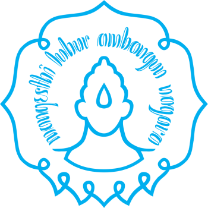
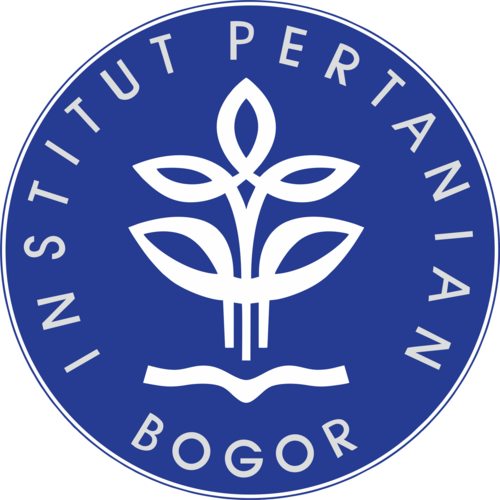
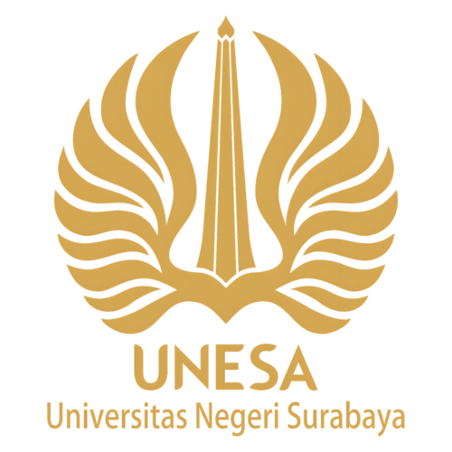
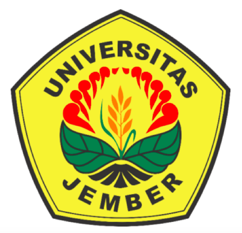

Daftar Jurusan
⚗️
Ilmu Pengetahuan Alam (IPA)
Fokus pada sains, matematika, dan penelitian ilmiah.
Mapel Peminatan: Matematika Peminatan, Fisika, Kimia, Biologi.
Mapel Syar'i: Fiqh, Akhlaq, Shorof, Nahwu, Shiroh, Hadits.
🌍
Ilmu Pengetahuan Sosial (IPS)
Fokus pada sosiologi, ekonomi, geografi, dan sejarah.
Mapel Peminatan: Ekonomi, Geografi, Sosiologi, Sejarah Peminatan.
Mapel Syar'i: Fiqh, Akhlaq, Shorof, Nahwu, Shiroh, Hadits.
Data Jumlah Siswa
| No | Nama Jurusan | Jumlah Siswa |
|---|---|---|
| 1 | Ilmu Pengetahuan Alam (IPA) | 720 Siswa |
| 2 | Ilmu Pengetahuan Sosial (IPS) | 300 Siswa |
Sebaran Alumni
Lulusan kami telah berhasil diterima dan tersebar di berbagai Perguruan Tinggi Negeri (PTN) favorit dan kampus terkemuka.



